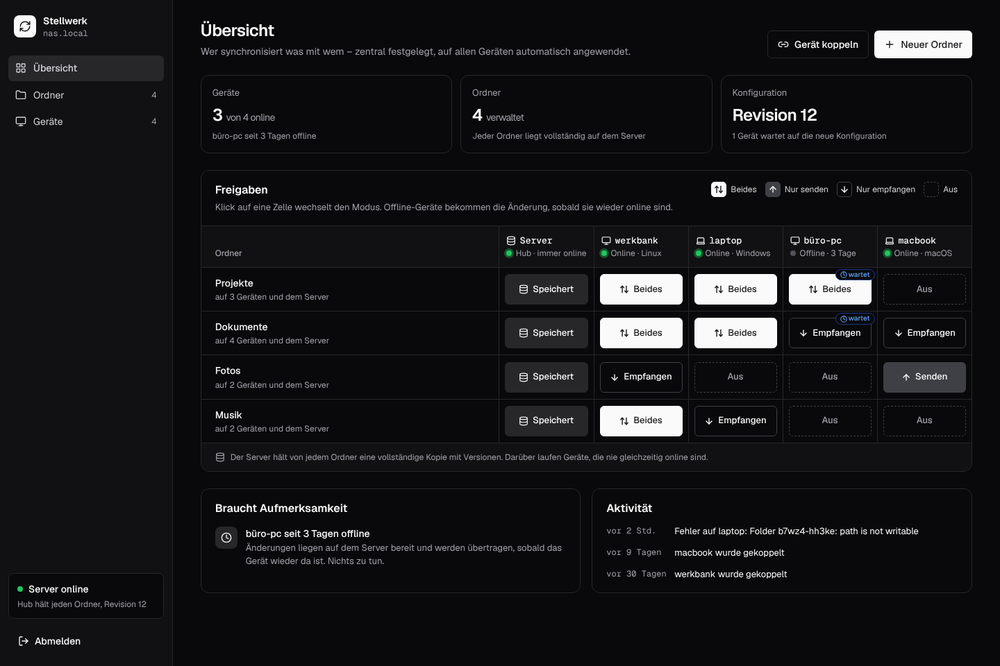

Stellwerk
Syncthing
Linux
Windows
macOS
Docker
Central web UI to manage
Syncthing on all your devices
. Self-hosted, no cloud.
# pair a device once, then manage it only in the web UI
$
stellwerk-agent join --server https://sync.example.org
K7Q2-MX9P-41TZ
